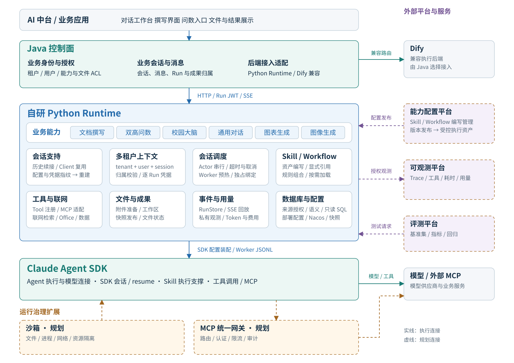
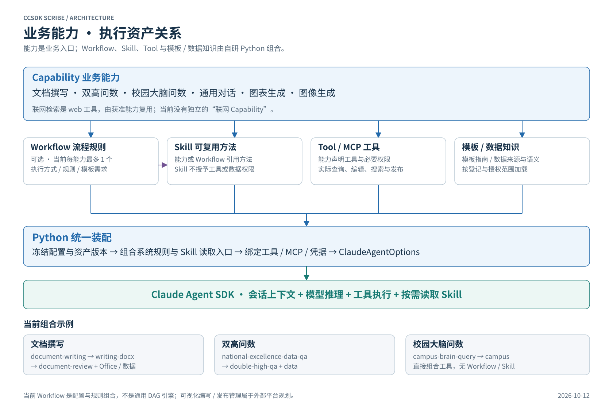
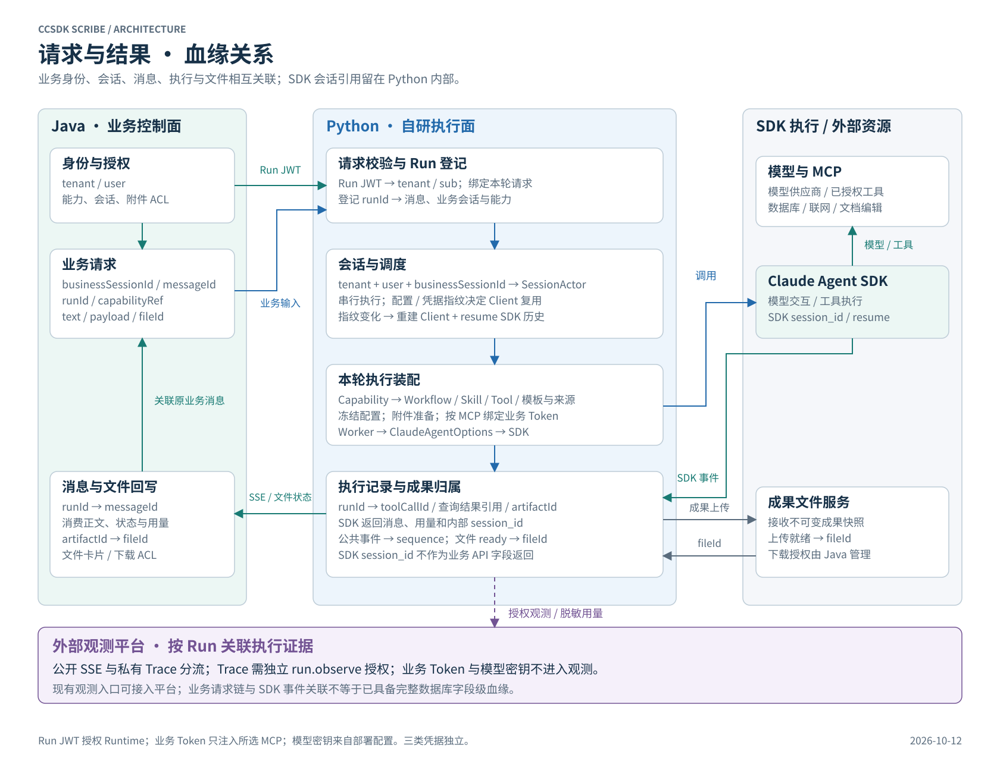

多租户身份与归属控制已有；生产隔离仍须独立验收。Java 按职责契约展示，未核验其实际接入实现。

SDK 提供 Skill 执行所需的工具与上下文；本项目由 Python 显式登记引用，正文按需读取。

SDK session_id 由 Python 内部管理。文件 ready 才携带远端 fileId；模型执行成功与文件交付状态分别处理。
突出自研 Python、SDK 底座、Java 控制面与外部平台的连接。实线为当前执行关系或接入契约，虚线为规划或待接入关系。

多租户身份与归属控制已有；生产隔离仍须独立验收。Java 按职责契约展示，未核验其实际接入实现。

SDK 提供 Skill 执行所需的工具与上下文；本项目由 Python 显式登记引用，正文按需读取。

SDK session_id 由 Python 内部管理。文件 ready 才携带远端 fileId；模型执行成功与文件交付状态分别处理。